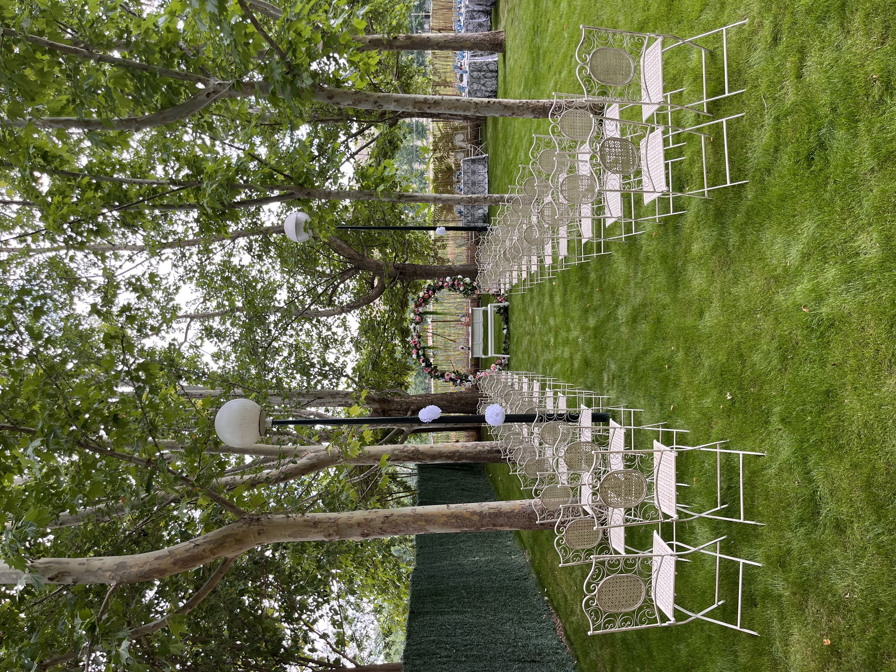

Un fin de semana juntos

La noche antes
Empezamos a celebrar la noche antes con un picoteo informal donde reunirnos todos los que, desde diferentes ámbitos, formáis parte de nuestra historia. Una ocasión para compartir un rato juntos, conocernos en un ambiente relajado y disfrutar de los primeros momentos de este fin de semana tan especial. Eso sí, guardad energía… ¡al día siguiente toca darlo todo!
Dress code recomendado: Smart Casual
Queremos veros guapos y cómodos para disfrutar juntos de una tarde-noche de primavera. Siempre que el tiempo acompañe, disfrutaremos de la terraza y el jardín, así que os recomendamos traer alguna prenda de abrigo, la temperatura puede refrescar al caer la noche.
Ellas: vestido o conjunto chic, chaqueta ligera y zapatos arreglados, pero no necesariamente formales.
Ellos: pantalón chino o de vestir, camisa o polo elegante, jersey fino o chaqueta ligera (americana opcional) y zapatos arreglados, pero no necesariamente formales.
Parking gratuito en la calle
Recomendamos venir en grupo para reducir el número de vehículos. Aunque hay espacio suficiente de aparcamiento a lo largo de la calle, así evitamos que tengáis que caminar demasiado para llegar al lugar.

El gran día
Llega el gran día que con tanta ilusión hemos estado preparando. Ceremonia junto a los viñedos, cóctel en los jardines, banquete acompañado con los vinos de la propia bodega y una fiesta para celebrarlo como se merece. Será un día muy especial que esperamos compartir con todos vosotros y que, juntos, hagamos inolvidable.
Dress code recomendado: Elegancia de día
Os animamos a elegir un look elegante y sofisticado, pensado para una celebración de día y en armonía con este día tan especial. Evitad el blanco y el negro riguroso. ¡Queremos una boda bonita y alegre!
Ellas: vestido midi o conjunto elegante, acompañado de bolso pequeño y zapatos de salón o fiesta. Tocado o pamela, opcional.
Ellos: traje, tanto en tonos oscuros como claros, acompañado de camisa, corbata y zapatos de vestir.